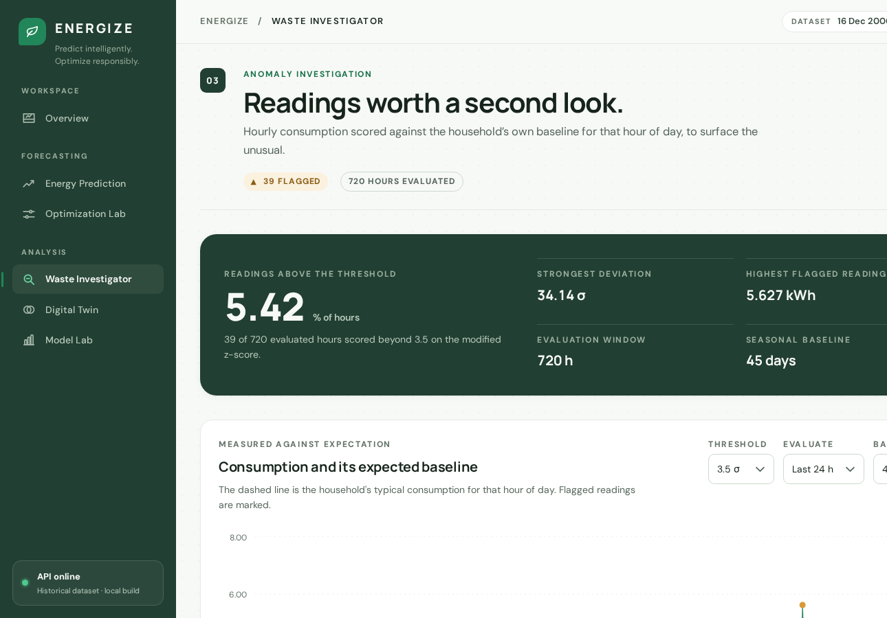
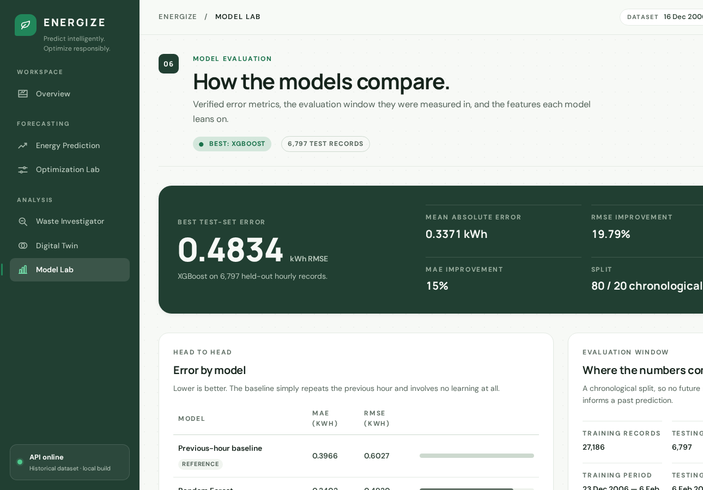

Project 03 // ML / Energy
03
ENERGIZE
Intelligent digital twin for energy conservation
ENERGIZE is an intelligent digital twin for energy conservation, combining energy forecasting, consumption analysis, anomaly investigation and optimisation over the UCI Household Power Consumption dataset. A React and TypeScript frontend sits on a FastAPI backend that serves two trained regression models.
Open live deployment → View repository →
2.07M
Minute-level readings
34,151
Hourly rows prepared
72h
Forecast horizon
2
Trained regressors

The problem
Most households have thousands of consumption readings and no way to read them. The wasteful hours stay invisible, near-term demand is unknown, and nobody can say what changing a habit would actually save.
What I built
A six-workspace digital twin over the UCI Household Power Consumption dataset — 34,151 hourly readings distilled from 2.07 million minute-level records. Random Forest and XGBoost forecast up to 72 hours ahead, a waste investigator scores every hour against the household’s own baseline, a digital-twin heatmap maps the shape of every weekday, and an optimisation lab tests hypothetical reductions.
Six workspaces
- Overview — headline consumption, a real historical chart and the signals worth acting on.
- Energy Prediction — single-step prediction with the lag inputs pre-filled from the household's own record, plus a recursive 24/48/72-hour forecast.
- Waste Investigator — hourly consumption scored against the household's baseline for that same hour of day, ranked by departure.
- Digital Twin — the observed shape of the household as a day × hour heatmap, with the forecast layered over it.
- Optimization Lab — reduction scenarios computed on the server, with the recommended scenario and its feasibility limits.
- Model Lab — verified error metrics, the evaluation window they were measured in, and the feature importances read from the trained artifacts.
The models
- Random Forest regressor — 100 trees, depth 15, trained and saved as a joblib artifact.
- XGBoost regressor — 300 estimators, depth 6, learning rate 0.05.
- Both models use the same six features: hour, day of week, month, and the previous 1, 24 and 168 hourly readings.
- Nine FastAPI endpoints serve the frontend — overview, history, model comparison, profile, anomalies, predict, forecast, optimise and health.
A note on honesty in the numbers
The interface deliberately separates four kinds of number, and labels them as such: Measured — actual readings from the prepared dataset. Forecast — model output, drawn as a dashed amber line. Detected anomaly — a reading that deviates from the household's own baseline for that hour of day. Simulated — a hypothetical reduction applied to a forecast.
Two limitations are worth understanding before you present this. Anomalies are not proof of waste — a household simply being awake at 03:00 looks anomalous, and the interface says so on the page. And the prepared dataset carries total household consumption only, so no reading can be attributed to a specific appliance.
The optimisation scenarios are a transparent decision heuristic — 0.7 weight on estimated savings, 0.3 on conservativeness — not a learned optimisation model. Savings are hypothetical and are not guaranteed.
More from the build


- React 19
- TypeScript
- Vite 8
- FastAPI
- XGBoost
- scikit-learn
- Recharts